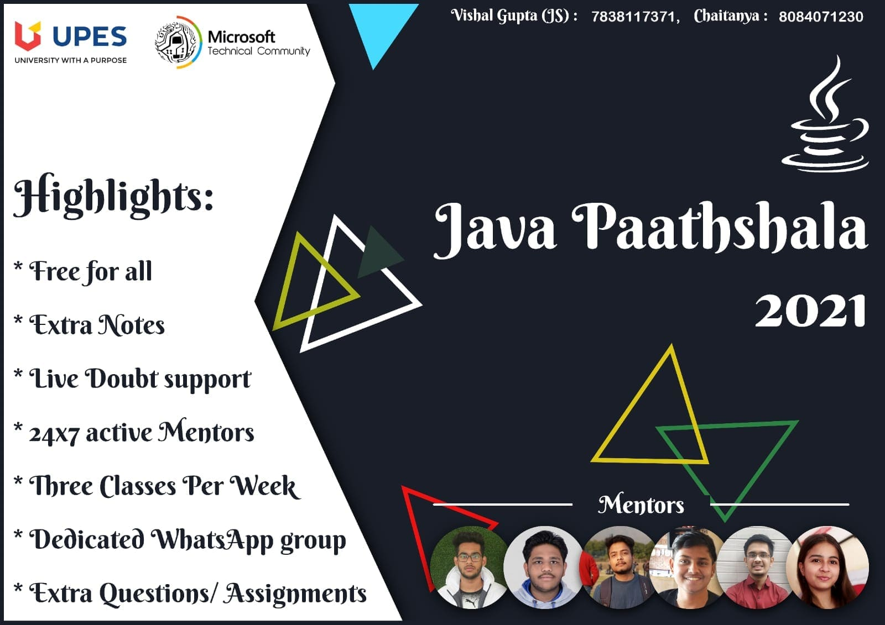
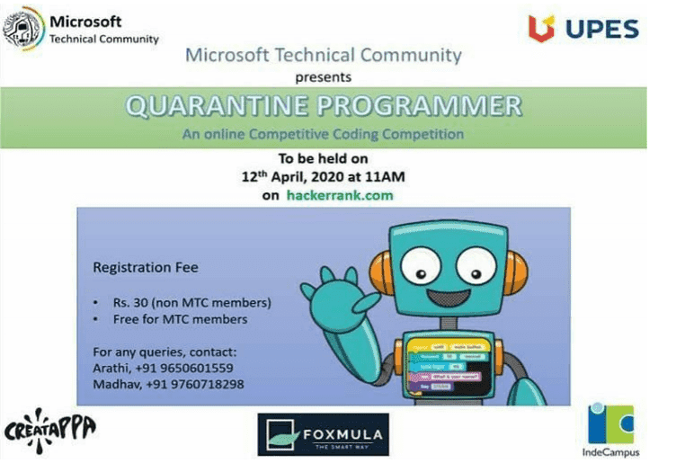
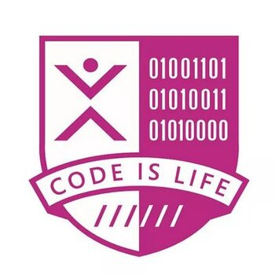

Technology is making people's lives easier.
we,here at MTC are,constantly
Innovating,Inventing and Improving.

|
Microsoft Technical Community was established in February 2018 with the vision of “Innovating, Inventing and Improvising” to educate fellow computer science enthusiasts about various aspects of the technical world. The goal was and is to create professionals out of amateurs and to teach not just Microsoft technologies but anything that is required for students to excel in their careers. We have come a long way since then, and still have many more goals to reach. |
Microsoft Technical Community only focuses on technical events and approaches them with complete professionalism. ‘Pathshala’ sessions, ‘Career Pathway’ sessions, ‘Buggymania’ and ‘Career Drive’ our main flagship event are just some of the events we conduct over a year with the sole purpose of creating better IT professionals. The team at Microsoft Technical Community is full of hard-working and professional individuals, who are always learning and teaching something new. |
Check out our past events to know more
 |
 |  |
 |
 |
 |